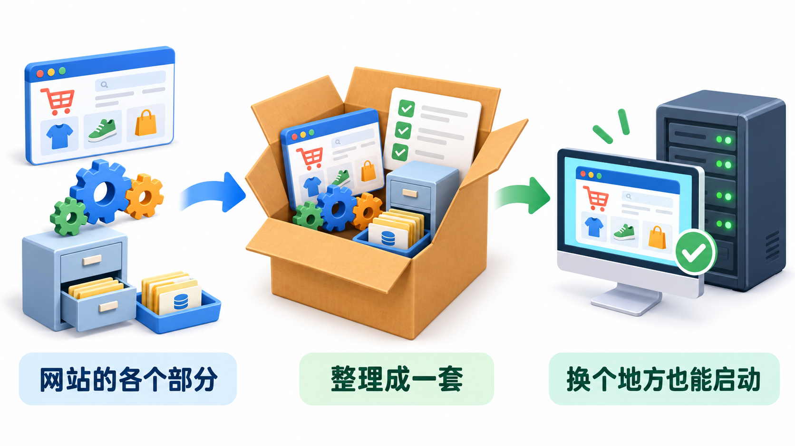

少折腾
减少反复安装和设置。
环境准备不再从零开始01 · 第一步 / DEMO → LIVE
backend/.env 里的演示开关仍为 true，也就是“开启”；且配置文件不完整。backend/.envDEMO_MODE=true
点击开关查看目标状态 · 仅作课堂示意，不修改项目文件
请取消这个网站的演示模式，让用户能够正常注册、登录、浏览产品和下单，并确保账号和订单能保存。请自行排查原因，重点检查 backend/.env 中的演示模式设置。需要修改 .env 时，先向我说明修改内容；缺少必要信息时再向我提问。修改后请实际验证完整流程。
店已经装修好了，接下来要摘下“试营业展示”的牌子，让完整流程真正跑通。
02 · 第二步 / CONTAINERIZATION
现在运行网站，要分别启动几个部分。
换一台电脑，可能又要重新安装、重新设置。
容器化部署：把网站前后端服务和它需要的运行条件整理好，按同一套方法启动。
生活化理解像搬家时把物品装进标准箱，再附上安装说明。搬到新的地方，就能照着说明快速恢复。

03 · 价值 / LESS FRICTION
不只是“换一种启动命令”
而是减少每次环境变化带来的重复劳动
减少反复安装和设置。
环境准备不再从零开始原来分开启动，现在统一管理。
一套方法管理服务以后搬到服务器，少走一些弯路。
本地经验可以延续不同项目各用各的运行条件。
项目之间更独立重启或更新网站，也能保留账号和订单。
前提是正确配置数据持久化每换一家店，都要重新搭厨房
→现在带着一套配好的厨房设备搬过去
04 · 工具 / DOCKER + COMPOSE
把各个部分装进独立的“运行箱”
让网站的不同部分按准备好的条件运行
一张“总安排表”
把网页、业务处理和资料库一起启动、停止和连接起来
Docker 让每个箱子运行起来
Compose 安排箱子一起工作
05 · 动手前 / INSTALL
课堂统一选择一条路线演示
另一条作为补充材料
安装或更新 WSL 2可以理解成“给 Docker 准备运行底座”。
按提示重启电脑
下载并安装 Docker Desktop打开后完成初始化。
wsl --install较新的 Windows 通常可使用讲师备注较新的 Windows 通常可通过 wsl --install 安装 WSL，不必一开始就手动下载内核包；旧系统再按提示补充处理。
安装 Docker Desktop，选择对应的 Apple 芯片或 Intel 版本。
通过 Homebrew 安装 Colima、Docker 和 Compose，再启动 Colima、检查工具是否可用。
brew install colima docker docker-compose
colima start
docker version && docker compose version
这一步的目标先把工具装好，并确认能够正常运行；具体项目配置下一步再处理。